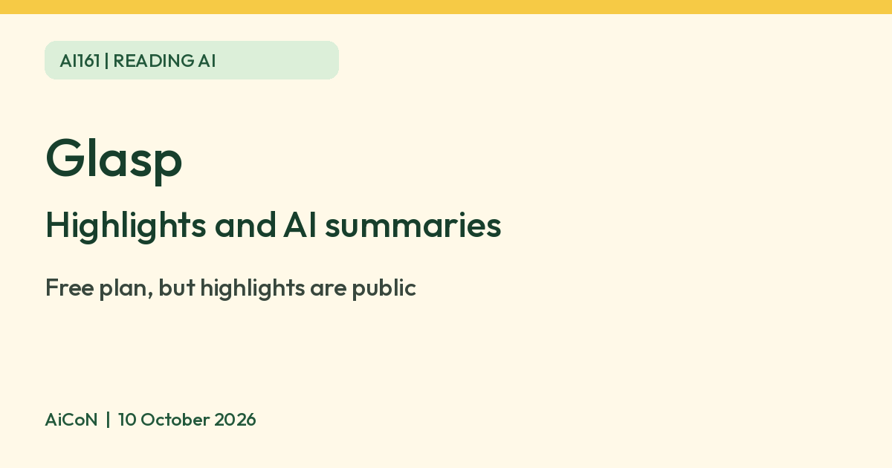

Glasp: free highlights and AI summaries, but highlights are public by default
Glasp saves your highlights from web pages, PDFs and YouTube and adds AI summaries. The free plan works, but highlights are public by default and private needs Pro.

What it is
Glasp is a tool for highlighting what you read online. You highlight web text, PDF passages or YouTube transcript text; Kindle highlights can be imported. Glasp saves passages and notes in a searchable library. Glasp says it also gives one-click AI summaries of articles, PDFs and YouTube videos, and lets you chat with the highlights you saved. It works through a browser extension (Chrome, Safari, Edge, Brave, Firefox and Opera are listed) and through iPhone and Android apps.
Is it free
Yes, with limits. Glasp says its free plan has unlimited highlights with no credit card and no trial clock. It also lists basic YouTube summaries, PDF uploads and chat, AI chat credits and 30 minutes of audio transcription per month. Basic YouTube summaries send the transcript and your prompt to your chosen AI assistant in a new tab, limited to 3 a day in the free extension; that assistant may have its own limits. The free plan includes 3 on-video YouTube summaries every 7 days. Pro is roughly ₹1,200 per month equivalent when paid annually, about ₹14,450 charged for the year ($150), or roughly ₹1,445 for monthly billing ($15). These are approximate conversions at ₹96.30 per US dollar checked on 10 October 2026, not verified India checkout prices; tax and card conversion fees may differ. The annual plan is $12.50 per month equivalent, not monthly installments. The pricing page also offers a higher-priced Unlimited plan. Exports to Markdown, CSV and Notion sync are free.
Check this before you highlight
Glasp says highlights are public by default. Keeping a highlight private is a Pro feature. On the free plan, saved highlights and associated notes are public. Buying Pro does not itself make every new highlight private: check Settings > Default Visibility and choose Private, then check existing items too. Do not highlight private or work documents on the free plan.
Is it available in India
Glasp lists browser extensions and mobile apps, but those pages do not establish availability for every Indian account or device. We found no official India statement. We did not test it.
How to try it
- Add the Glasp extension to your browser, or install the app, and create an account.
- Open a public article and highlight a sentence you want to keep.
- Try a YouTube summary, remembering the free limit of 3 on-video summaries every 7 days.
Limits to know
- Highlights are public on the free plan.
- On-video YouTube summaries are limited to 3 every 7 days on the free plan.
- AI summaries can miss or invent points. Check them against the source.
- Paid subscriptions renew automatically. Cancel in user settings before renewal; Glasp says refunds are not offered except where law requires. Access continues to the end of the paid period.
- If you downgrade, Glasp says existing private highlights may become locked or inaccessible until you upgrade again. Export important notes first.
- Private visibility is an audience setting, not a promise of local-only AI processing. Basic summaries send content to the assistant you choose.
- We did not test it ourselves.
Frequently asked questions
Can I keep my highlights private for free?
No. Glasp says private highlights need Pro.
Sources: Glasp pricing, Glasp features, Highlight privately on Glasp, USD/INR conversion reference. Checked 10 October 2026.